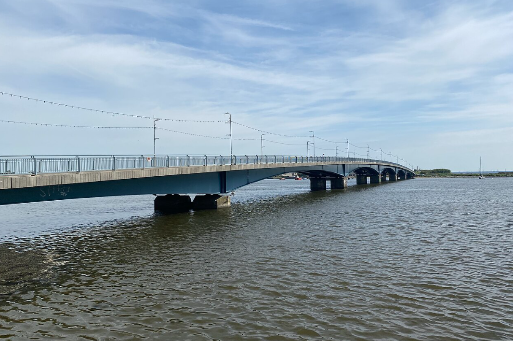
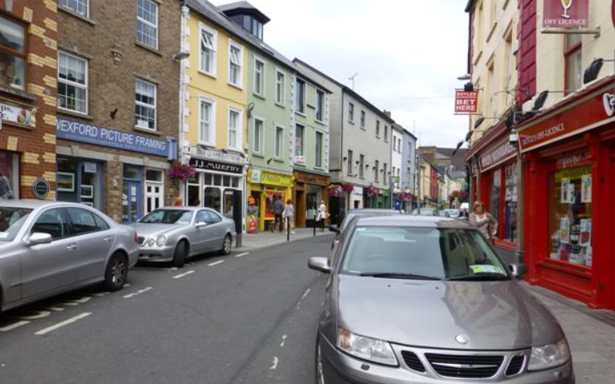
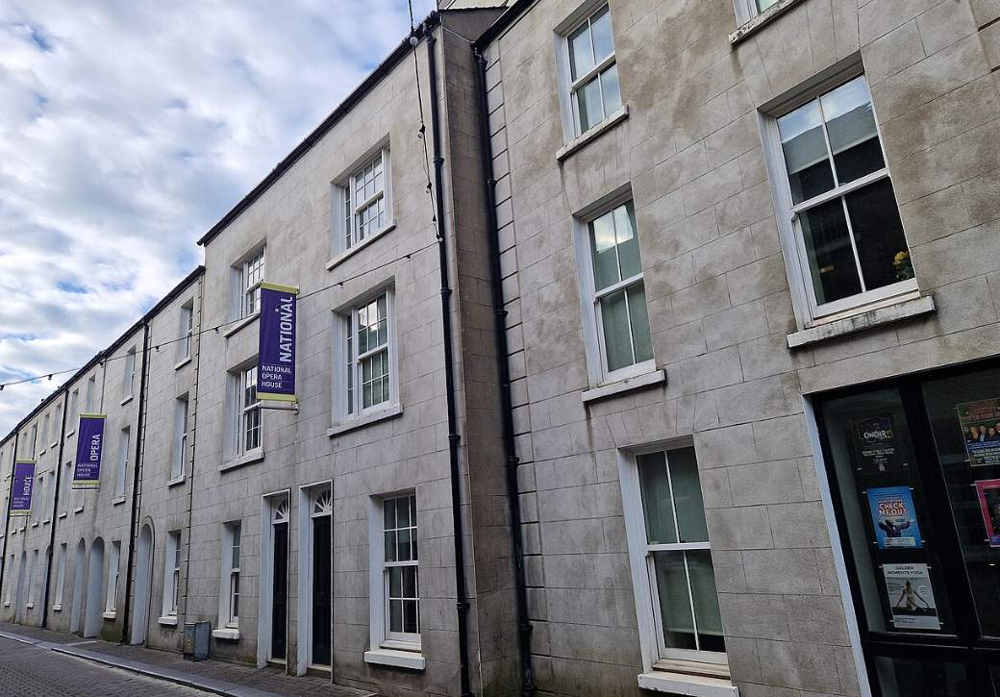
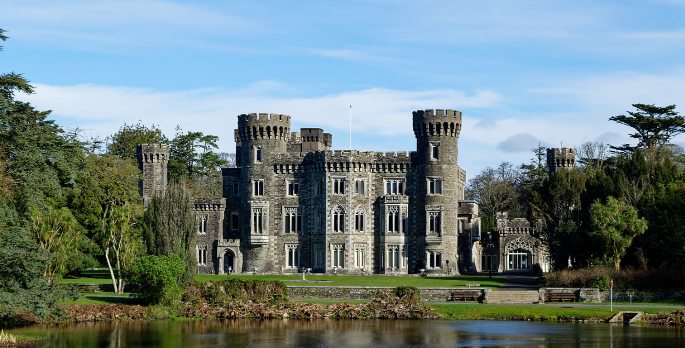

Wexford’s most trusted local IT partner since 2018
FK IT Solutions was founded in 2018 with one clear promise: Wexford businesses deserve fast, honest, and human IT support at local prices. We started in a tiny office above a chipper on South Main Street with just two laptops and a phone line. Today we proudly support over 68 companies across the county — hotels, credit unions, medical centres, legal practices, factories, and retailers.


Accountability is everything to us. Same-day response is guaranteed — whether it’s a quick remote fix or an engineer onsite within hours. We plan every change around your busiest times and deliver hands-on training that actually gets used. No jargon, no tickets, no endless hold music.
Security isn’t an add-on — it’s built in. We’re ISO 27001 certified, a Microsoft Solutions Partner, and Veeam Gold ProPartner. That means audited processes, resilient encrypted backups, continuous monitoring, and real incident response plans. We’ve blocked 41 live attacks and maintained 99.98% uptime in 2024.


We’re 100% Wexford-owned and proud of it. Every team member is hired and trained locally. We invest in apprenticeships and support initiatives that grow technical careers right here at home. When you call us, you speak to someone who knows your business and the realities of running a company in this county.